Label
Label Overview
The Label control displays plain text in a report. Drag the Label item from the Toolbox onto the report's area to add a Label control to it.

Double-click the label to invoke its in-place editor and enter the desired static text.
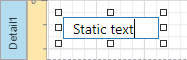
You can also drop a TXT file to a band to create a label with associated file content.
Press CTRL+Enter to submit text changes and exit the label's in-place editing mode.
Bind to Data
Display Field Values
You can bind the label's Text property to a data field obtained from a report's data source. Switch to the Properties panel, expand the Label Tasks category and click the Text property's marker. Select Text Expression from the popup menu. Then select a data field or construct a binding expression in the invoked Expression Editor.

You can use the Expression Editor to construct a complex binding expression that involves two or more data fields.

You can also drag and drop a numeric or text field from the Field List to create a new label bound to this field.
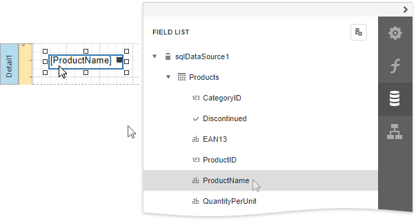
See the Bind Controls to Data topic for more information.
The Process Duplicates Mode, Process Duplicates Target and Process Null Values options enable you to hide a control when a duplicated or null value appears in an assigned data source.

You can also use the Text Format String property to specify output values' format.
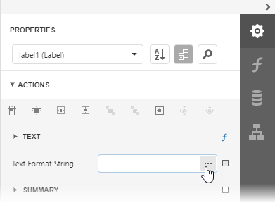
The ellipsis button invokes the FormatString editor:
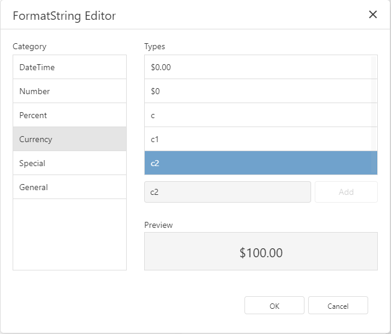
Display Summaries
Specify a data range in the Running property and select the summary function in the Expression Editor to display a summary function's result in a label.
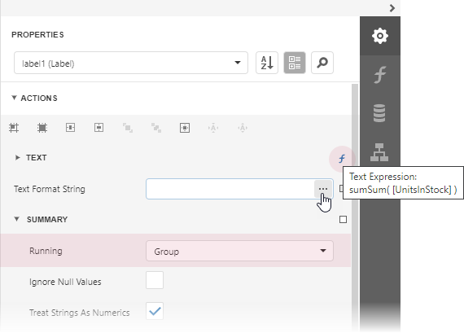
The ellipsis button invokes the Expression Editor:

Adjust the Label Size and Content
Static Content
You can change a label's size to fit its static text using the Fit Bounds To Text command from the label's context menu:
If the Word Wrap option is enabled, the command displays control content in multiple lines. It reduces control height and adjusts its width to fit its content.

If the Word Wrap option is disabled and the control's content is partially visible, the command adjusts the control's size to display this content.
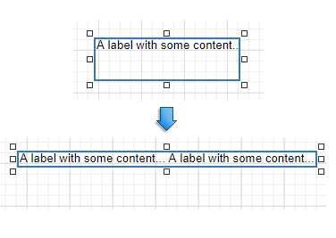
This command's result also depends on the control's Text Alignment and Right To Left settings.
Use the Fit Text To Bounds button to adjust the control's font size to fit its area. The Word Wrap option defines whether the text can occupy multiple lines or should be in a single line.
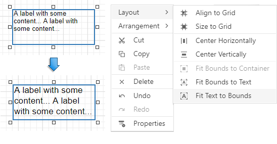
These commands are not available in the following cases:
- A label's text is an empty string;
- A label's text is bound to data;
- A label's Angle property is specified.
Data-Bound Labels
The Can Grow and Can Shrink properties allow you to increase or decrease the control's height according to its content in Print Preview mode.
| Can Grow is enabled | Can Grow is disabled |
|---|---|
| 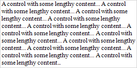 | 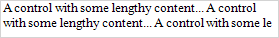 |
| Can Shrink is enabled | CanShrink is disabled |
|---|---|
| 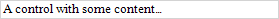 |  |
The Auto Width property specifies whether to adjust a data-bound label's width to its content automatically.
You can also use the opposite Text Fit Mode property to adjust a control's font size to fit its boundaries in Print Preview. This property is not available if the Can Grow, Can Shrink or Auto Width option is enabled.
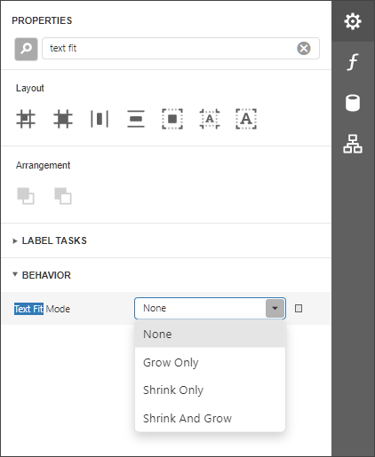
| Text Fit Mode = None | Text Fit Mode = Grow Only | Text Fit Mode = Shrink Only | Text Fit Mode = Shrink And Grow |
|---|---|---|---|
 |
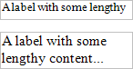 | 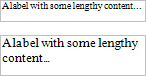 |  |
See the Lay out Dynamic Report Content topic for more information.
Interactivity
Set the Enabled option in the Edit Options category section to Yes to edit a label's content in Print Preview mode.

Clicking this label in a previewed document invokes the appropriate editor.

Use the label's Interactive Sorting option to click this label in Print Preview to sort report data. Set the Target Band property to the Group Header or Detail band, and specify the data field in the Field Name property.
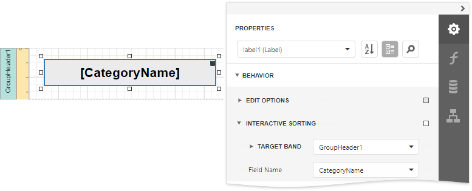
Refer to Sort a Report in Print Preview for a step-by-step tutorial.
Markup Text
Enable the Allow Markup Text property to format the label's text with markup tags.
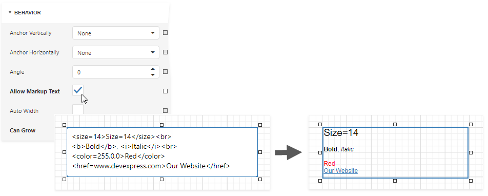
Label supports the following tags:
| Tag | End Tag | Description |
|---|---|---|
| <br> | Inserts a single line break. Enable the WordWrap property to use this tag. | |
| <nbsp> | - | Inserts a space. |
| <color=value> | </color> | Specifies the text color. |
| <backcolor=value> | </backcolor> | Specifies the background color. |
| <size=value> | </size> | Specifies the font size. |
| <b> | </b> | Defines bold text. |
| <i> | </i> | Defines italic text. |
| <s> | </s> | Defines strikethrough text. |
| <u> | </u> | Defines underlined text. |
| <image=value> | - | Inserts an image from the report's named image collection. Supports both raster images and SVG images. Use the report's Image Resources property to provide images and reference them by their Id. The image tag's size attribute sets the image display pixel size. If the specified width/height exceeds the label's width/height, it is reduced to display the entire image. Specify the size attribute after the tag's value followed by the ";" character. |
| <href=value> | </href> | Displays a hyperlink. The value string specifies the hyperlink source, and the string between the opening and closing tags is the text to display. |
When a report is exported to XLS or XLSX, the following rich-text content is converted from labels into Excel-native rich-text content:
| Text format | <b>, <i>, <u>, <s> |
| Line break | <br> |
| Non-breaking space | <nbsp> |
| Font | <font=[font name]> |
| Font size | <size=[font size]> |
| Foreground color | <color=[color]> |